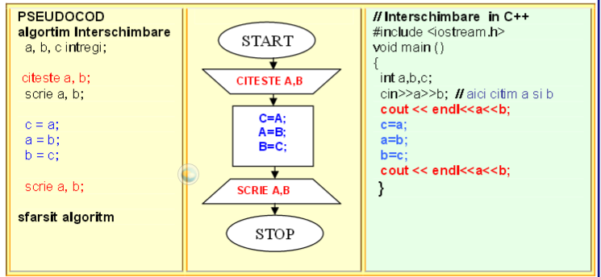

Structura liniară este reprezentată de instrucțiuni care se execută la fel la fiecare executare a programului (sau a secvenței de program), indiferent care sunt valorile variabilelor cu care se lucrează. |
 | |
2 .STRUCTURA ALTERNATIVĂ (IF-ELSE ȘI SWITCH)Structura alternativă (decizională) execută un anumit set de instrucțiuni dacă o condiție este îndeplinită, altfel execută alt set de instrucțiuni. Condiția va returna întotdeauna un rezultat de tip boolean (TRUE sau FALSE). În C++ structura decizională (alternativă) este if.  | Structurile repetitive execută o instrucțiune de un anumit număr de ori, sau cât timp o condiție este adevărată. Se mai numesc și bucle sau cicluri. Structurile repetitive pot fi:
Structurile repetitive cu număr necunoscut de pași pot fi: |
| Execuţie: Prima data este evaluata expresia scrisa intre paranteze rotunde, la "switch()", apoi valoarea expresiei este comparata pe rand cu fiecare valoare determinata de "case". Daca se gaseste o identitate se executa codul asociat acelui "case". Apoi se iese din instructiunea "switch". Daca, parcurgand fiecare "case", nu se gaseste o egalitate, se executa codul de la "default". Prin folosirea lui "break" se opreste parcurgerea corpului instructiunii atunci cand s-a gasit o valoare egala cu 'expresie' si se iese din "switch". ! Instructiunea "switch" poate inlocui un sir de conditii cu "else if". |
| Este folosita pentru implementarea structurilor repetitive condiţionate anterior. Execuţie:
|
| Este utilizată pentru implementarea structurilor repetitive condiţionate posterior. Execuţie:
|
| Instrucțiunea repetitivă cu un număr cunoscut de pași FOR se folosește când numărul de repetiții este cunoscut –un numar fix de ori. |